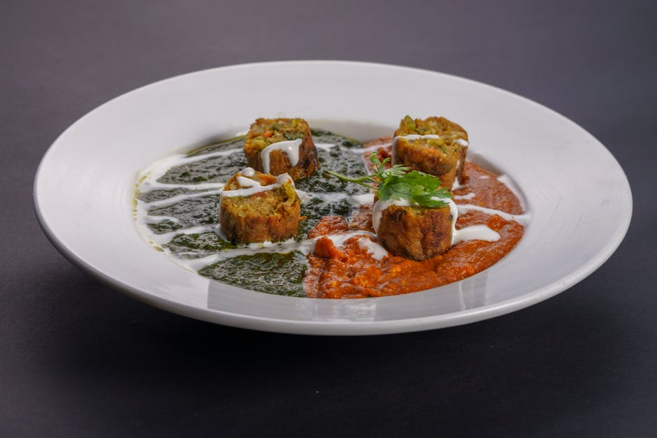

Paneer & Tofu Tikka with Spinach

Paneer & Tofu Tikka with Spinach delivers 70 g of protein for just 13 g net carbs — a quick dinner that comes together fast. A filling, macro-balanced dinner that won't spike your blood sugar.
Ingredients
- 150 g Paneer
- 200 g Extra-firm tofu
- 25 g Hemp hearts
- 100 g Baby spinach
- 60 g Plain 0% Greek yogurt
- 1 tbsp Tikka/garam masala spice blend
- 1 tbsp Olive oil or ghee
- Garlic, ginger, tomato paste, salt, to taste
Equipment
- non-stick skillet
Method
- Cube paneer and pressed tofu; toss with Greek yogurt and tikka spices and marinate 10 min.
- Sear the cubes in oil or ghee until golden on all sides; remove.
- Wilt spinach with garlic, ginger and a little tomato paste, return the paneer and tofu, and stir in hemp hearts.
- Loosen with a splash of water into a light sauce.
Storage & make-ahead
Fridge: keeps 3–4 days in an airtight container — reheat gently. Most portions freeze well for up to 2 months; thaw overnight.
Tip
Hitting 70 g protein vegetarian and low-carb is hard — paneer + tofu + hemp hearts make it work. This one is higher in fat, so it's the richest meal in the book.
Dietary swaps
Dairy-free: Paneer → extra-firm tofu; Plain 0% Greek yogurt → unsweetened coconut or soy yogurt (for lactose intolerance or a dairy-free diet)
Soy-free: Extra-firm tofu → paneer, or extra chicken / egg (note: a couple of these shift the protein source slightly)
Full nutrition (estimated, per serving): 660 kcal · 70 g protein · 13 g net carbs · 36 g fat (23 g sat) · 5 g fiber · 6 g sugar · 560 mg sodium. Allergens: Milk, Soy. Macros are realistic estimates from standard food-composition values; brands and portions vary.
Get the full cookbook (PDF) — 100 recipes, 3 meal plans & the science →